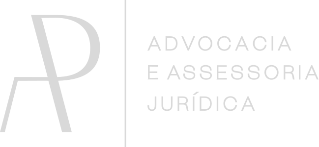
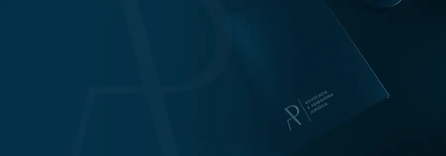
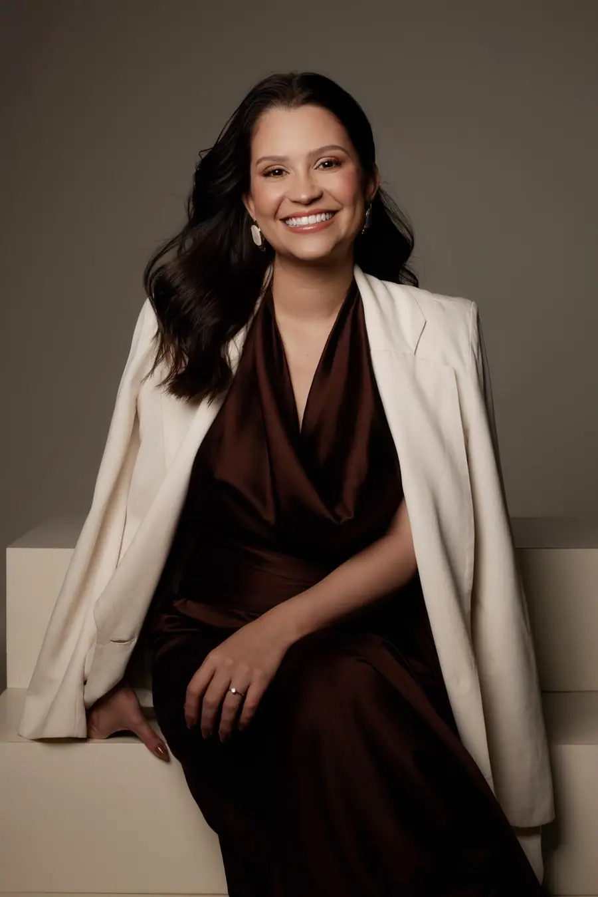

Paleta de cores
Medida no navegador: fundos ponderados pela área ocupada, textos pela quantidade de caracteres. Destaques reúnem cores saturadas e fundos de botão.
Fundos
rgb(0, 41, 63)
Textos
rgb(250, 250, 250)
rgb(192, 125, 90)
Destaques
rgb(0, 41, 63)
rgb(192, 125, 90)
Gradientes
linear-gradient(90deg, rgb(0, 63, 96) 0.49%, rgb(4, 48, 71) 54.33%, rgb(2, 56, 84) 100%)linear-gradient(135deg, rgba(255, 255, 255, 0.055) 0%, rgba(255, 255, 255, 0.016) 38%, rgba(255, 255, 255, 0) 65%), nonelinear-gradient(135deg, rgba(255, 255, 255, 0.08) 0%, rgba(255, 255, 255, 0.024) 35%, rgba(0, 0, 0, 0) 65%), nonelinear-gradient(90deg, rgb(4, 48, 71) 0%, rgb(0, 63, 96) 100%)linear-gradient(90deg, rgba(217, 217, 217, 0.2) 17.31%, rgba(255, 248, 248, 0.2) 100%)Tipografia
Escala usada (desktop 1440px)
| Tamanho | Peso | Família | Amostra |
|---|---|---|---|
| 58px | 500 | Baskervville | Texto de exemplo |
| 35px | 500 | Baskervville | Texto de exemplo |
| 28px | 500 | Baskervville | Texto de exemplo |
| 24px | 500 | Baskervville | Texto de exemplo |
| 18px | 500 | Urbanist | Texto de exemplo |
| 16px | 500 | Urbanist | Texto de exemplo |
| 16px | 400 | Urbanist | Texto de exemplo |
| 15px | 400 | Urbanist | Texto de exemplo |
Mobile (390px): 35px/500, 25px/500, 23px/500, 16px/400, 16px/500, 15px/500, 14px/400, 14px/500 · H1 no mobile: sem h1 semântico
Tags
| Tag | Família | Tamanho | Peso | Altura de linha | Espaçamento | Caixa | Cor |
|---|---|---|---|---|---|---|---|
| <h2> | Baskervville | 35px | 500 | 42px | normal | none | #FFFFFF |
| <p> | Urbanist | 16px | 500 | 22px | normal | none | #FAFAFA |
Botões
Recriados com os estilos computados reais. Efeitos de hover e animação não aparecem aqui; veja a seção de animações.
fundo #00000000 · texto #FFFFFF · raio 59.504px · padding 4px 10px · 18px/500 none · 3x na páginafundo #00000000 · texto #CC3366 · raio 0px · padding 0px 0px · 16px/500 none · 1x na páginaCards e containers
Contratos revisados para cortar custos e dar proteção Conferimos cada ponto antes de você
raio 25px · sombra none · borda 0px none rgb(51, 51, 51) · 500x248pxPlanejamento patrimonial sucessório Organizamos os bens da sua família em vida e evitamos
raio 25px · sombra none · borda 0px none rgb(51, 51, 51) · 350x248pxAmanda Pires Rezende Formada em direito pela Universidade Federal Fluminense e Master of L
raio 33.557px · sombra rgba(255, 255, 255, 0.2) 0px 1px 0px 0px inset, rgba(255, 255, 255, 0. · borda 1px solid rgba(255, 255, 255, 0.07) · 528x350pxBordas, raios e sombras
Sombras
rgba(255, 255, 255, 0.14) 0px 1px 1px 0px inset, rgba(203, 231, 245, 0.25) 0px 0px 5px 0px, rgba(155, 205, 230, 0.1) 0px 0px 10px 0pxrgba(255, 255, 255, 0.2) 0px 1px 0px 0px inset, rgba(255, 255, 255, 0.08) 1px 0px 0px 0px inset, rgba(4, 48, 71, 0.24) 0px -1px 0px 0px inset, rgba(4, 48, 71, 0.12) -1px 0px 0px 0px inset, rgba(0, 0, rgba(255, 255, 255, 0.18) 1px 1px 0px 0px inset, rgba(4, 48, 71, 0.14) -1px -1px 0px 0px insetEspaçamentos
- Largura do conteúdo mais comum: 1100px
- Padding vertical das seções (topo/base): 0px/0px (8x)
- Gaps mais usados (flex/grid): 20px, 0px 10px, 10px, 13px, 80px
- Altura total da página: 4541px em 8 seções
Estrutura e ritmo de cores das seções
Cada faixa é uma seção de topo, com altura proporcional e a cor ou imagem de fundo real.
Animações, ícones e bibliotecas
- Keyframes próprios: nenhum keyframe próprio
- Animações de entrada do Elementor: nenhuma
- Classes de scroll reveal da casa: nenhuma
- Ícones: 31 SVG, 0 ícones de fonte
- Bibliotecas e tags detectadas: ga4, gtm, jquery, lenis, lottie, meta-pixel, swiper
Snippets da biblioteca presentes nesta página
- Nenhum snippet da biblioteca identificado.
Imagens do site



